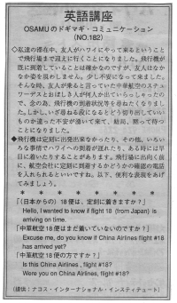

定刻に着きますか。
I wanted to know if flight 54 from Japan is arriving on time. Osamu went to the airport to pick up his friend. He arrived a little late and got confused. He saw some flight attendents coming off a plane. He wanted to ask if they were from China Airlines but he didn’t know what to say. He wandered around the airport for a while and then finally found his friend. He thought it would be easier to ask someone something. If you see a flight attendent you can say: Is this China Airlines, flight #4? or Were you on China Airlines, flight #5? If you are not sure if it arrived, you should say: “Has China Airlines flight 63, arrived yet?” Remember that if you are going to pick up someone from the airport, you should call the airlines before you leave. Sometimes the flight is delayed, or in rare cases it arrives early. When you call the airlines, you should say: Hello, I wanted to know if flight 63 (from Japan) is arriving on time. JAL: Chief Purser United: Chief Purser Northwest: Lead flight attendent Continental: Didn’t know American: Premium flight attendent
私達の滞在中、友人がハワイにやって来るということで飛行場まで迎えに行くことになりました。飛行機が既に到着していることは確かなのですが、友人はなかなか姿を現わしません。少し不安になってきました。そんな時、友人が乗ると言っていた中華航空のスチュワーデスとおぼしき人が何人か出ていらっしゃったので、念の為、飛行機の到着状況等を尋ねたくなりました。しかし、いざ尋ねる段になるとどう切り出していいものか違った不安が湧いてきて、結局、黙って待つことになりました。
飛行機は定刻に出発できなかったり、その他、いろいろな事情でハワイへの到着が遅れたり、ある時には早目に着いたりすることがあります。飛行場に出向く前に、航空会社に定刻に到着するかどうかの確認の電話を入れられるといいですね。以下、便利な表現をあげてみましょう。
（日本からの）１８便は、定刻に着きますか。
Hello, I wanted to know if flight 18 (from Japan) is arriving on time.
中華航空１８便はまだ着いていないのですか。
Excuse me, do you know if China Airlines flight #18 has arrived yet?
中華航空１８便の方ですか。
Is this China Airline, flight #18?
Were you on China Airlines, flight #18?

| © 1995-2013 NACOS International Institute. All Rights Reserved. |